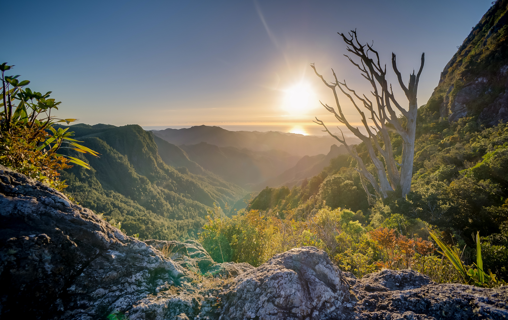

An unfamiliar town that suddenly feels like home. A
fleeting encounter that resonates forever. A stranger destined to become a friend.
DESTINATIONS
Visit them Once for a Lifetime
Malam Jabba
Just only a 5 hrs drive from Islamabad but it’s a top-class destination for skiers, facilities are
Zipline, Chairlift, good land inclined for skiing. 5 Star hotel is also constructed to facilitate
tourists so you can stay there and enjoy your winter vacations as well. Now locals are well trained as
well, so they can teach you how to ski with proper gear. Zipline in Malam Jabba is also an attraction,
it flies over the snow like a bird. Adventure sports in winters so the 1st key destination is Malam
Jabba. Now international skiing events are also taking place in Malam Jabba.
Naltar Valley
Far away from the capital on the top hills of Karakorum ranges, there is a valley known as Naltar. One
of the highest elevated skiing resorts in the world where famous mountaineers come to match their
adrenaline requirements and enjoy skiing sports events. Every year governments of Pakistan and Gilgit
Baltistan organize an event named the Pakistan International skiing Cup. With the help of foreign aids,
in Naltar we do also have the Chairlift, ski hangers, and machines to prepare the proper slope for
skiing activities. In our List Naltar is the second-best destination for Skiing in Pakistan.
Ganga Choti Azad Kashmir
Known for its conception landscape, lush green meadows, and a road curling between hills but now it’s
also a top-class destination for skiing and other winter sports. The government of Azad Kashmir is
planning to construct a Chairlift for spotlighting the potential of tourism in that area. Ganga Choti is
an underrating and hidden from domestic tourists in Pakistan.
Arrang Kel

Almost 8 hrs drive and 1 hr hike from Muzaffarabad Azad Kashmir, a well-known tourist destination Arrang
kel is becoming good winter destination in Pakistan from last 2 years. The government is planning to
promote tourism and especially winter sports, so we will the rise of winter sports in upcoming years.
Madaklasht
One of the unrated but top winter sports destinations is Madaklasht Chitral, which is situated in the
southeastern tip of district Chitral. This valley has huge potential but still remained unexplored and
most of the domestic tourists in Pakistan don’t know about this adventure destination. Last year Ukhano
( Youtube Vlogger ) explore this valley and came up with a good location and a cinematic video that
highlighted this valley as a winter destination in Pakistan for the domestic and international audience.
If you are a well-trained skier and had a team along with you, we recommend you to join the local event
of skiing at Madaklast Valley this year.